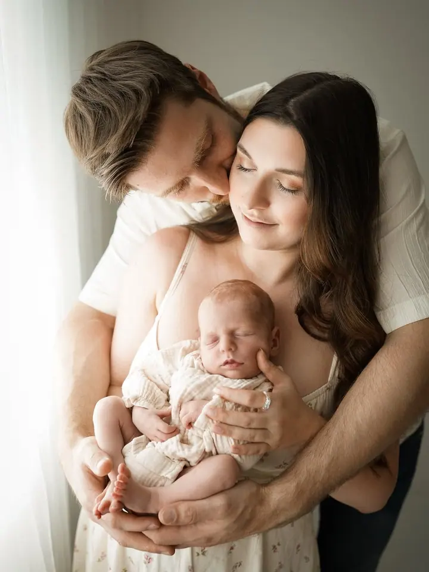
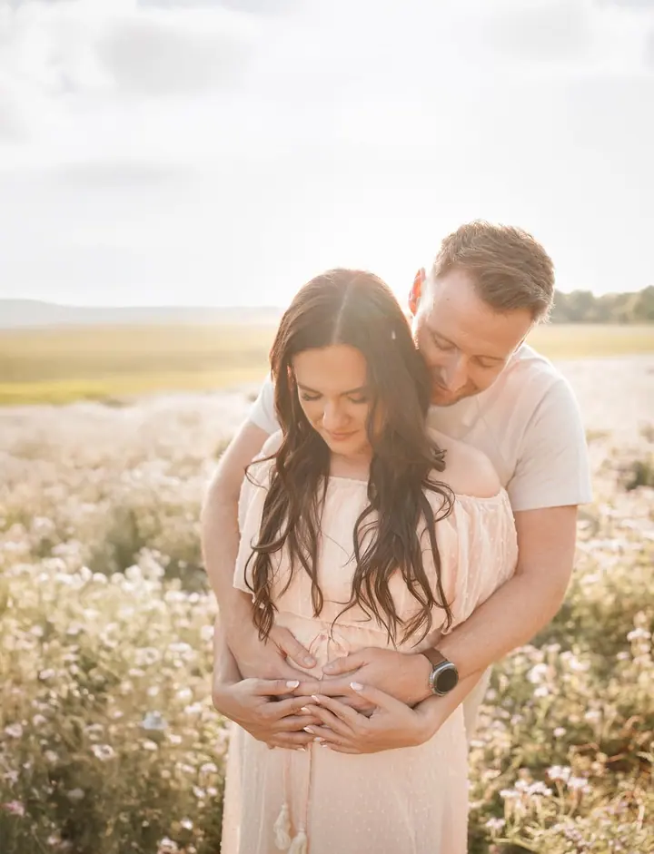
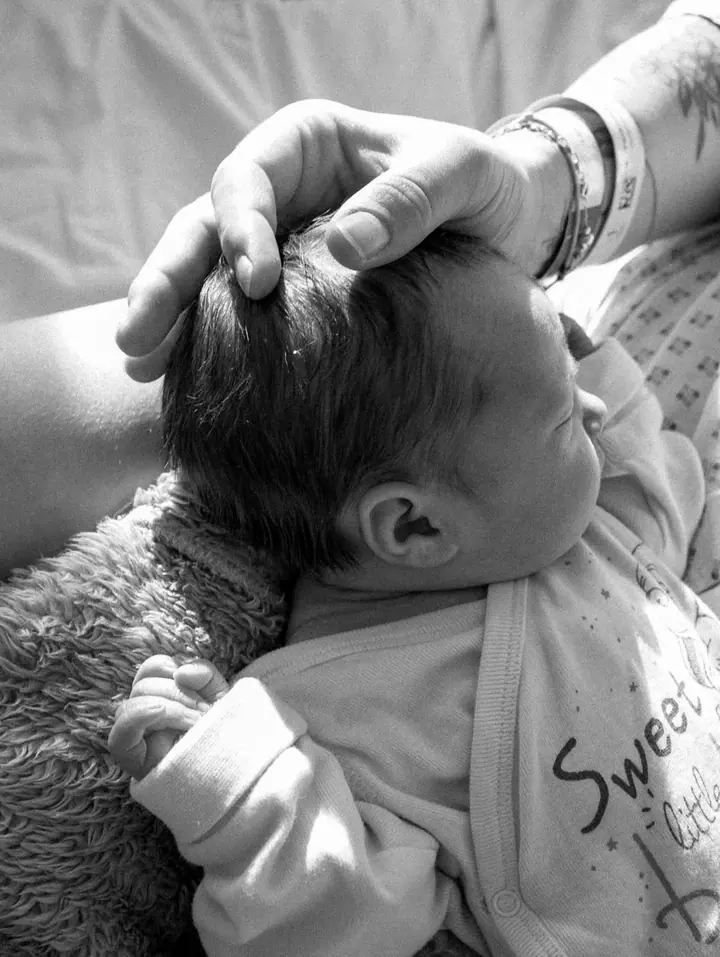
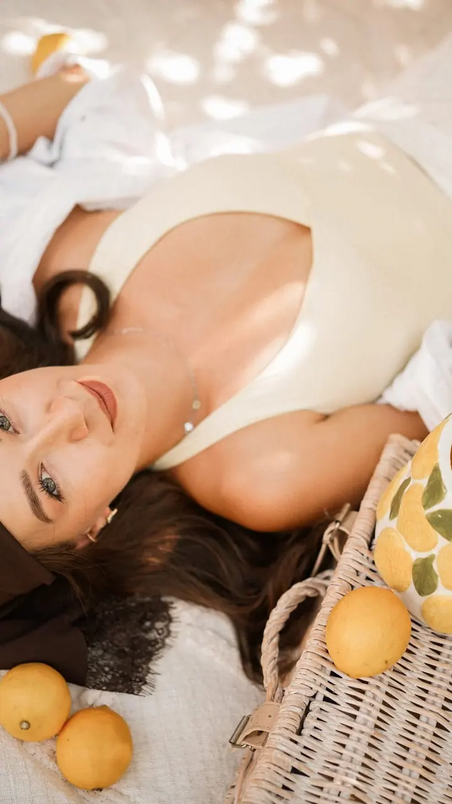

Newborn focení
Focení novorozených miminek ideálně mezi 7. a 14. dnem po porodu, samotného miminka i s rodiči nebo sourozenci. Rekvizity, dekorace i oblečky pro miminko mám připravené já.

Jmenuji se Natalie Hargašová a v Třinci a okolí fotím novorozená miminka, maminky v očekávání i celé rodiny venku v přírodě. Ráda fotím v klidu a bez spěchu, aby se u fo…
Rezervovat termínJsem svatební a rodinná fotografka z Třince a nejvíc času trávím s rodinami, které čekají miminko nebo ho právě přivítaly na svět. Fotím ve svém ateliéru, venku na loukách a v přírodě kolem Třince a s miminky i přímo v porodnici.


U newborn focení nikam nespěchám. Maminka může miminko v klidu nakojit, pak ho uspíme a fotíme samotné miminko, s rodiči i se sourozenci. Rekvizity, dekorace a oblečky mám připravené, vy si vezměte hlavně dudlík a věci na přebalení.
Před focením s vámi proberu lokaci i oblečení a během focení vás povedu. Každou fotku, kterou si vyberete, dostanete ve třech podobách: v přirozených barvách, černobíle a s uměleckým filtrem v mém stylu. Pokud chcete, aby na fotkách bylo něco, co je vám blízké, třeba čepička od babičky nebo připomínka vaší práce, ráda to zapojím.
Co fotím
Focení novorozených miminek ideálně mezi 7. a 14. dnem po porodu, samotného miminka i s rodiči nebo sourozenci. Rekvizity, dekorace i oblečky pro miminko mám připravené já.
Stylizované rodinné nebo párové focení v přírodě nebo v ateliéru, které trvá 60 až 90 minut. Pomůžu vám s výběrem lokace i oblečení.
Klidné focení bříška v ateliéru nebo venku v přírodě, klidně i s partnerem nebo staršími dětmi. Každou vybranou fotku dostanete barevně, černobíle i s mým uměleckým filtrem.
Fotím svatby v Třinci a okolí. Na webu najdete celé svatební příběhy párů, které jsem fotila.
Postup
Napište mi e-mail nebo zprávu na WhatsApp. Na newborn focení se mi ozvěte už z porodnice, abych vám mohla navrhnout termín.
Domluvíme se, jestli budeme fotit v ateliéru, nebo v přírodě. Doporučím vám lokaci i oblečení a newborn oblečky vám můžu půjčit.
Rodinné a těhotenské focení trvá 60 až 90 minut, newborn zhruba hodinu a půl až dvě a půl. Celou dobu vás vedu a s miminkem jedeme jeho tempem.
Do 7 až 10 dní vám pošlu zhruba 100 náhledů na výběr. Finální upravené fotky odevzdávám elektronicky 2 až 3 týdny od vašeho výběru.
Otázky
Ideálně se mi ozvěte už z porodnice. Novorozence fotím do 14 dnů věku, nejlépe mezi 7. a 10. dnem, kdy miminko ještě hodně spí.
Všechno na přebalení, dudlík (i když ho doma nepoužíváte) a pokud maminka nekojí, umělé mléko. Hodí se i náhradní oblečení pro vás rodiče. Pro miminko stačí bílé body nebo overal, ostatní oblečky a rekvizity mám já.
Pak doporučuji počkat do 3. až 6. měsíce, kdy se miminko víc směje, zvedá hlavičku a reaguje na hračky. Fotky jsou v podobném duchu jako newborn, jen se miminko neuspává.
Rodinné focení zahrnuje 10 upravených fotografií, každá další stojí 200 Kč. Každou vybranou fotku dostanete barevně, černobíle a s mým uměleckým filtrem a na přání můžeme domluvit i tisk v dárkové krabičce.
